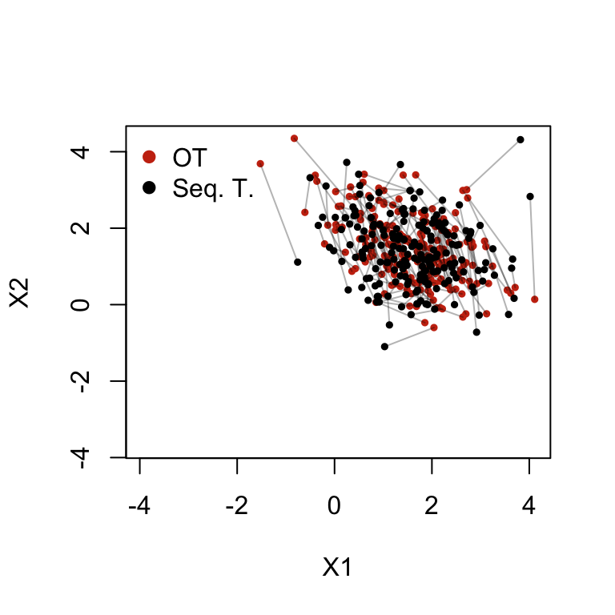
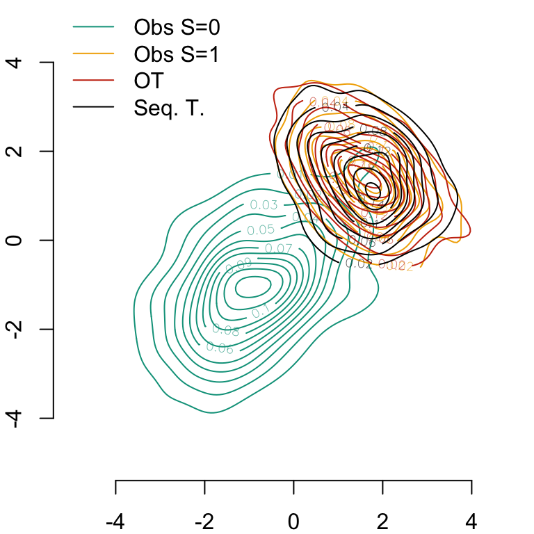
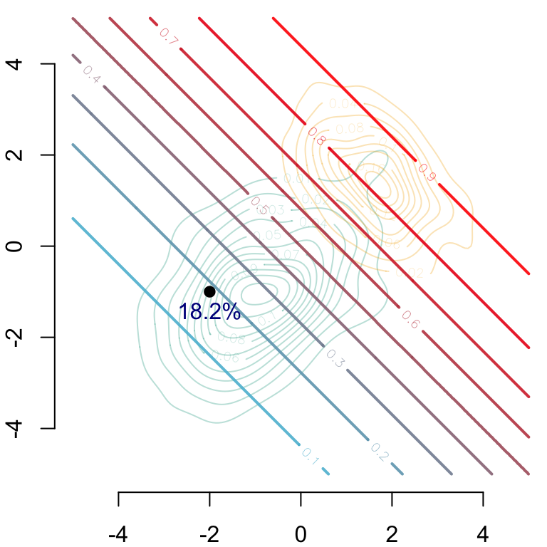

In this chapter, we illustrate the interpretable counterfactual fairness methodology based on sequential transport on simulated data.
Required packages and definition of colours.
library(tidyverse)library(ks)library(dichromat)library(fairadapt)library(expm)library(cluster)colours <-c(`0`="#5BBCD6", `1`="#FF0000", A ="#00A08A", B ="#F2AD00", with ="#046C9A", without ="#C93312", `2`="#0B775E")# Colour scale from colour of class 0 to class 1colfunc <-colorRampPalette(c(colours["0"], colours["1"]))scl <- scales::alpha(colfunc(9),.9)
4.1 Data Generation
Consider a causal structural model with a sensitive attribute \(s\) with no parents, two legitimate features \(x_1\) and \(x_2\), and an outcome \(y\).
Let us draw 100 observation per group. For group 0, we draw values from a multivariate Gaussian distribution with mean -1 and the following variance-covariance matrix: \(\Sigma_0 = \begin{bmatrix}1.2^2 & \frac{1.2^2}{2}\\ \frac{1.2^2}{2} & 1.2^2\end{bmatrix}\). For group 1, we draw values from a multivariate Gaussian distribution with mean 1.5 and with the following variance-covariance matrix: \(\Sigma_0 = \begin{bmatrix}.9^2 & -\frac{4\times .9^2}{10}\\ -\frac{4 \times .9^2}{2} & .9^2\end{bmatrix}\).
# Number of observations per groupset.seed(123) # set the seed for reproductible resultsn0 <-200# First bivariate Gaussian distribution: group s=0M0 <-c(-1, -1)S0 <-matrix(c(1, .5, .5,1) *1.2^2, 2, 2)X0 <- mnormt::rmnorm(n0, M0, S0)D_SXY_0 <-data.frame(S =0,X1 = X0[, 1],X2 = X0[, 2])# Second bivariate Gaussian distribution: group s=1n1 <-400M1 <-c(1.5, 1.5)S1 <-matrix(c(1, -.4, -.4, 1) * .9^2, 2, 2)X1 <- mnormt::rmnorm(n1, M1, S1)D_SXY_1 <-data.frame(S =1,X1 = X1[,1],X2 = X1[,2])
Assume the response variable, \(Y\), to be a binary variable that depends on the covariates of each group. More specifically, assume that it is drawn from a Bernoulli distribution with probability of occurrence being linked through a logistic function to \(x_1\) and \(x_2\), i.e., \(Y \sim \mathcal{B}(p(S))\), where \(p(S)\) differs among groups: \[
p(S) = \begin{cases}
\frac{\exp{(\eta_0})}{1+\exp{(\eta_0)}}, & \text{if } S = 0,\\
\frac{\exp{(\eta_1})}{1+\exp{(\eta_1)}}, & \text{if } S = 1,
\end{cases}
\] where \[
\begin{cases}
\eta_0 = \frac{1.2 x_1 + 1.6x2}{2}\\
\eta_1 = \frac{.8 x_1 + 2.4x2}{2}.
\end{cases}
\]
# Drawing random binary response variable Y with logistic model for each groupeta_0 <- (D_SXY_0$X1 *1.2+ D_SXY_0$X2 /2* .8) /2eta_1 <- (D_SXY_1$X1 * .8+ D_SXY_1$X2 /2*1.2) /2p_0 <-exp(eta_0) / (1+exp(eta_0))p_1 <-exp(eta_1) / (1+exp(eta_1))D_SXY_0$Y <-rbinom(n0, size =1, prob = p_0)D_SXY_1$Y <-rbinom(n1, size =1, prob = p_1)
We merge the two datasets in a single one
D_SXY <-rbind(D_SXY_0, D_SXY_1)
And we create two datasets that contain individuals from group 0 only, and individuals from group 1 only:
# Dataset with individuals in group 0 onlyD_SXY0 <- D_SXY[D_SXY$S ==0, ]# Dataset with individuals in group 1 onlyD_SXY1 <- D_SXY[D_SXY$S ==1,]
For illustration, we would like to display the contour of the density in each group on the graphs. To do so, we rely on a kernel density estimation:
# Computation of smoothing parameters (bandwidth) for kernel density estimationH0 <-Hpi(D_SXY0[, c("X1","X2")])H1 <-Hpi(D_SXY1[, c("X1","X2")])# Calculating multivariate densities in each groupf0_2d <-kde(D_SXY0[, c("X1","X2")], H = H0, xmin =c(-5, -5), xmax =c(5, 5))f1_2d <-kde(D_SXY1[, c("X1","X2")], H = H1, xmin =c(-5, -5), xmax =c(5, 5))
4.2 Optimal Transport
First, for comparison purposes, since \(X_1\) and \(X_2\) are drawn from a multivariate Gaussian distribution, we can compute the transported values using the closed form formula.
Let us set the sensitive name s and its value in the source distribution S_0. We also set the outcome name, y.
data <- D_SXYs <-"S"S_0 <-0y <-"Y"
Thanks to the topologicalOrdering() function from {fairadapt}, we can get a topological ordering from the adjacency matrix. We redefine this function here.
#' Topological Ordering#'#' @source This function comes from the fairadapt package. Drago Plecko,#' Nicolai Meinshausen (2020). Fair data adaptation with quantile#' preservation Journal of Machine Learning Research, 21.242, 1-44.#' URL https://www.jmlr.org/papers/v21/19-966.html.#' @param adj_mat Adjacency matrix with names of the variables for both rows and#' columns.#' @return A character vector (names of the variables) providing a topological#' ordering.#' @exporttopological_ordering <-function(adj_mat) { nrw <-nrow(adj_mat) num_walks <- adj_matfor (i inseq_len(nrw +1L)) { num_walks <- adj_mat + num_walks %*% adj_mat } comparison_matrix <- num_walks >0 top_order <-colnames(adj_mat)for (i inseq_len(nrw -1L)) {for (j inseq.int(i +1L, nrw)) {if (comparison_matrix[top_order[j], top_order[i]]) { top_order <-swap(top_order, i, j) } } } top_order}#' Swap Two Elements in a Matrix.#'#' @source This function comes from the fairadapt package. Drago Plecko,#' Nicolai Meinshausen (2020). Fair data adaptation with quantile#' preservation Journal of Machine Learning Research, 21.242, 1-44.#' URL https://www.jmlr.org/papers/v21/19-966.html.#' @param x A matrix.#' @param i Index of the first element to swap.#' @param j Index of the second element to swap.#' @return The matrix x where the i-th and j-th elements have been swapped.#' @noRdswap <-function(x, i, j) { keep <- x[i] x[i] <- x[j] x[j] <- keep x}
top_order <-topological_ordering(adj)top_order
[1] "S" "X1" "X2" "Y"
4.3.2 Transport of the First Variable
Let us extract the names of the variables that will be transported:
We will therefore begin with transporting the first variable from this ordering, X1.
x_name <-"X1"
We will need to know whether this variable is numerical or not. Depending on this, we need to apply a different methodology to transport an observation \(x_1\) from group \(S=0\) to \(S=1\):
If \(X_1\) is a numerical variable, we will first compute the empirical quantile of that observation in group \(S=0\), i.e., \(F_{X_1|S=0}(x_1)\). Then, in the other group, \(S=1\), we will compute the sample quantile corresponding to a probability of \(F_{X_1|S=0}(x)\), i.e., \(x_1^* = T(x_1) = Q_{X_1 | S=1}\left( F_{X_1|S=0}(x_1) \right)\).
If \(X_1\) is a categorical variable, we will simply draw a class from the empirical distribution of \(X_1 | S=1\) and consider it to be the counterfactual value of \(x_1\).
The individuals to transport are those from group \(S=0\):
# Observations in group S_0individuals <- data |>filter(!!sym(s) ==!!S_0)
The value of the variable that will be transported;
Since the variable is numerical, we compute the empirical cumulative distribution function in group \(S=0\)
# Data in group S=0data_0 <- data |>filter(!!sym(s) ==!!S_0)# Observation of the variable to transport in that groupx_S0 <- data_0 |>pull(!!x_name)# Empirical cumulative distribution functionF_X_S0 <-ecdf(x_S0)
Then, we can use this ecdf to compute the empirical quantile of all observations from group \(S=0\):
f <-F_X_S0(indiv_x)head(f)
[1] 0.260 0.930 0.560 0.685 0.215 0.890
The transported value for each observation is simply the empirical quantile corresponding to a probability f in group \(S=1\):
# Data in group S=1data_1 <- data |>filter(!!sym(s) !=!!S_0)# Values of the variable of interest in group S=1x_S1 <- data_1 |>pull(!!x_name)transported <-as.numeric(quantile(x_S1, probs = f))head(transported)
Now that we have transported \(X_1\), we need to transport \(X_2\) which also depends on \(S\), but also on \(S_1\). Again, we will need to consider two cases, depending on the type of \(X_2\).
Let us redefine the name of the variable of interest:
x_name <-"X2"
We get the names of the parents:
parents <-colnames(adj)[adj[, x_name] ==1]parents
[1] "S" "X1"
The values of the current variable in group group:
Then, for each observation in group \(S=0\), we compute its distance to all other observations withing the same group. We use the Gower’s distance which allows to handle mixed variables. The distance \(D(i,j)\) between two observations \(i\) and \(j\) each represented by a vector of \(p\) characteristics (\(p\) features) is computed as: \[D(i,j) = \frac{\sum_{k=1}^{p}\omega_k d_k(i,j)}{\sum_{k=1}^{p} \omega_k},\] where \(\omega_k\) are possible weights attributed to variable \(k\) and \(d_k(i,j)\) is the distance between the \(k\)-th characteristic, which depends on its type. If the \(k\)-th characteristic is numerical: \(d_k(i,j) = \frac{|x_{ik} - x_{jk}|}{R_k}\), where \(R_k = \max(x_k) - \min(x_k)\). If the \(k\)-th characteristic is categorical, the distance is simply equal to 1 if the two observations \(i\) and \(j\) share the same characteristic, and 0 otherwise: \(d_k(i,j) = \begin{cases}1, x_{ik} = x_{jk}\\ 0, x_{ik} \ne x_{jk}\end{cases}\).
The distances will be used as weights to compute the CDF.
Let us compute these distances for each observation from group \(S=0\):
The row \(i\) of weights_S0 contains the distance of observation \(i\) to all other observations from \(S=0\) using the characteristics of the parents. For each observation, let us also compute the sum of these distances.
Now, let us prepare a table with the values of the characteristics of the parents where variables that were influenced by \(S\) have previously been transported. In this example, \(X_1\) is a parent of \(X_2\) and has been transported in the first step.
data_0_parents_t <- data_0_parents #initfor (parent in parents) {# does the parent depend on the sensitive variableif (parent %in%names(list_transported)) { data_0_parents_t <- data_0_parents_t |>mutate(!!sym(parent) := list_transported[[parent]]) }}head(data_0_parents_t)
Now, we can compute the distance between the parents from group \(S=0\) (where some parent characteristics may have been transported previously) to each observation in group \(S=1\). Note that here, the daisy() function from {cluster} does not allow to compute the distances of each observation from one matrix to each observation of another matrix; we need to stack the two matrices and compute the distance from each observation to all the others. This is absolutely not optimal, since we will compute a lots of unrequired distances.
The \(i\)-th row of weights_S1 gives the distances of the \(i\)-th (transported) observation from group \(S=0\) to all the observations in group \(S=1\). Let us also compute the sum of distances for each of these observations.
# Empirical distribution functionf <-rep(NA, length(x_S0))for (i in1:length(x_S0)) { f[i] <- weights_S0[i, ] %*% (x_S0 <= x_S0[i]) / tot_weights_S0[i]}# To avoid making the `weighted.quantile()` function to crash:f[f==1] <-1-(1e-8)
Then, we can compute the weighted quantiles in group \(S=1\) at the obtained probabilities. We only keep the closest observations: here we keep only the 5th closest points and set the weight of other points to 0.
Warning in Hmisc::wtd.quantile(x = x_S1, weights = wts, probs = f[i]): probable
complete loss of accuracy in modulus
length(transported)
[1] 200
4.3.3.2 Case of a Factor Variable
If the variable to transport is a factor variable, we first fit a multinomial model to predict the class of that variable in group \(S=1\).
# Not run herefit_indix_x <- nnet::multinom( class ~ .,data = data_1_parents |>mutate(class = x_S1))
Then, we use that model to predict the values using the parents characteristics from group \(S=0\), where the previously transported characteristics were transported:
# Not run herepred_probs <-predict(fit_indix_x, type ="probs", newdata = data_0_parents_t)
For each prediction, we obtain a vector with estimated probabilities to belong in each category of the factor variable. We draw a class randomly using these probabilities as weights.
# Not run here
drawn_class <- apply(
pred_probs, 1, function(x) sample(1:ncol(pred_probs), prob = x, size = 1)
)
Then, we just format the obtained class.
# Not run heretransported <-colnames(pred_probs)[drawn_class]if (is.factor(x_S1)) { transported <-factor(transported, levels =levels(x_S1))}
The transported value can be stored.
# Not run herelist_transported[[x_name]] <- transported
4.3.4 Transport of the Subsequent Variables
If there are more variables in the graph, we can continue using the same procedure as in the transport of the second variable.
4.4 Wrapping up: The Sequential Transport Function
Let us wrap up the previous steps in a function.
R codes for the seq_trans() function.
#' Sequential Transport Using a Pre-Defined Causal Graph#'#' The sensitive attribute, S, is assumed to be a binary variable with value#' $S_0$ in the source distribution and $S_1$ in the target distribution.#'#' @param data Data frame with the observations.#' @param adj Adjacency matrix for the causal graph.#' @param s Name of the sensitive attribute column in the data.#' @param S_0 Label of the sensitive attribute in the source distribution.#' @param y Name of the outcome variable in the data.#' @param num_neighbors Number of neighbors to use in the weighted quantile#' estimation. Default to 5.#' @param silent If `TRUE`, the messages showing progress in the estimation are#' not shown. Default to `silent=FALSE`.#'#' @returns A list with the following elements:#' * `transported`: A named list with the transported values. The names are those of the variables.#' * `weights`: A list with the weights of each observation in the two groups.#' * `ecdf`: A list with empirical distribution functions for numerical variables.#' * `ecdf_values`: A list with the values of the ecdf evaluated for each observation in the source distribution.#' * `fit_for_categ`: A list with the estimated multinomial models to predict categories using parents characteristics#' * `params`: A list with some parameters used to transport observations:#' * `adj`: Adjacency matrix.#' * `top_order`: Topological ordering.#' * `s`: Name of the sensitive attribute.#' * `S_0`: Label of the sensitive attribute in the source distribution.#' * `y`: Name of the outcome variable in the data.#' * `num_neighbors`: Number of neighbors used when computing quantiles.#' @md#' @export#'#' @importFrom stats predict ecdf quantile#' @importFrom dplyr across filter mutate pull select#' @importFrom tidyselect where#' @importFrom rlang sym !! := is_character#' @importFrom cluster daisy#' @importFrom Hmisc wtd.quantile#' @importFrom nnet multinomseq_trans <-function(data, adj, s, S_0, y,num_neighbors =5,silent =FALSE) {# Make sure character variables are encoded as factors data <- data |>mutate(across(where(is_character), ~as.factor(.x)))# Topological ordering top_order <-topological_ordering(adj) variables <- top_order[!top_order %in%c(s, y)]# Observations in group S_0 data_0 <- data |>filter(!!sym(s) ==!!S_0) data_1 <- data |>filter(!!sym(s) !=!!S_0)# Lists where results will be stored list_transported <-list() # Transported values list_weights <-list() # Weights list_ecdf <-list() # Empirical dist. function list_ecdf_values <-list() # Evaluated values of the ecdf fit_for_categ <-list() # Fitted multinomial models for categ. variablesfor (x_name in variables) {if (silent ==FALSE) cat("Transporting ", x_name, "\n")# Names of the parent variables parents <-colnames(adj)[adj[, x_name] ==1]# values of current x in each group x_S0 <- data_0 |>pull(!!x_name) x_S1 <- data_1 |>pull(!!x_name)# Check whether X is numeric is_x_num <-is.numeric(x_S0)# Characteristics of the parent variables (if any) parents_characteristics <- data_0 |>select(!!parents, -!!s)if (length(parents_characteristics) >0) { data_0_parents <- data_0 |>select(!!parents) |>select(-!!s) data_1_parents <- data_1 |>select(!!parents) |>select(-!!s)# Weights in S_0 weights_S0 <-as.matrix(daisy(data_0_parents, metric ="gower")) tot_weights_S0 <-apply(weights_S0, MARGIN =1, sum)# Weights in S_1# First, we need to get the transported values for the parents, if necessary data_0_parents_t <- data_0_parents #initfor (parent in parents) {# does the parent depend on the sensitive variableif (parent %in%names(list_transported)) { data_0_parents_t <- data_0_parents_t |>mutate(!!sym(parent) := list_transported[[parent]]) } }# Unfortunately, we will compute a lot of distances not needed combined <-rbind(data_0_parents_t, data_1_parents) gower_dist <-daisy(combined, metric ="gower") gower_matrix <-as.matrix(gower_dist) n_0 <-nrow(data_0_parents_t) n_1 <-nrow(data_1_parents) weights_S1 <- gower_matrix[1:n_0, (n_0 +1):(n_0 + n_1), drop =FALSE] weights_S1 <- weights_S1 +1e-8 weights_S1 <-1/ (weights_S1)^2 tot_weights_S1 <-apply(weights_S1, MARGIN =1, sum)if (is_x_num ==TRUE) {# Numerical variable to transport# Empirical distribution function f <-rep(NA, length(x_S0))for (i in1:length(x_S0)) { f[i] <- weights_S0[i, ] %*% (x_S0 <= x_S0[i]) / tot_weights_S0[i] } list_ecdf_values[[x_name]] <- f f[f==1] <-1-(1e-8)# Transported values transported <-rep(NA, length(x_S0))for (i in1:length(x_S0)) { wts <- weights_S1[i, ] wts[-order(wts, decreasing =TRUE)[1:num_neighbors]] <-0 transported[i] <- Hmisc::wtd.quantile(x = x_S1, weights = weights_S1[i, ], probs = f[i] ) } } else {# X is non numeric and has parents# Fit a model to predict the categorical variables given the# characteristics of the parents in group to transport into fit_indix_x <- nnet::multinom( x_S0 ~ .,data = data_1_parents |>mutate(x_S0 = x_S1) )# Predictions with that model for transported parents pred_probs <-predict(fit_indix_x, type ="probs", newdata = data_0_parents_t)# For each observation, random draw of the class, using the pred probs# as weights drawn_class <-apply( pred_probs, 1,function(x) sample(1:ncol(pred_probs), prob = x, size =1) ) transported <-colnames(pred_probs)[drawn_class]if (is.factor(x_S1)) { transported <-factor(transported, levels =levels(x_S1)) } fit_for_categ[[x_name]] <- fit_indix_x } list_transported[[x_name]] <- transported# Store weights for possible later use list_weights[[x_name]] <-list(w_S0 =list(weights = weights_S0, tot_weights = tot_weights_S0),w_S1 =list(weights = weights_S1, tot_weights = tot_weights_S1) ) } else {# No parentsif (is_x_num ==TRUE) {# X is numerical and has no parents F_X_S0 <-ecdf(x_S0) list_ecdf[[x_name]] <- F_X_S0 f <-F_X_S0(x_S0) list_ecdf_values[[x_name]] <- f transported <-as.numeric(quantile(x_S1, probs = f)) } else {# X is not numerical and has no parents transported <-sample(x_S1, size =length(x_S0), replace =TRUE)if (is.factor(x_S1)) { transported <-factor(transported, levels =levels(x_S1)) } else { transported <-as.factor(transported) } } list_transported[[x_name]] <- transported } }return(list(transported = list_transported,weights = list_weights,ecdf = list_ecdf,ecdf_values = list_ecdf_values,fit_for_categ = fit_for_categ,params =list(adj = adj,top_order = top_order,s = s,S_0 = S_0,y = y,num_neighbors = num_neighbors ) ) )}
We can then call this function to transport our data in a single call of that function.
transported <-seq_trans(data = D_SXY, adj = adj, s ="S", S_0 =0, y ="Y")
Transporting X1
Transporting X2
Warning in Hmisc::wtd.quantile(x = x_S1, weights = weights_S1[i, ], probs =
f[i]): probable complete loss of accuracy in modulus
Warning in regularize.values(x, y, ties, missing(ties), na.rm = na.rm):
collapsing to unique 'x' values
4.5 Comparison: Sequential Transport and Multivariate Optimal Transport
Let us compare the transported values obtained with this algorithm to those obtained with optimal transport.
In Figure 4.2, we plot observations from the initial group in green Then we add the transported values with sequential transport assuming that \(x_2\) is influenced by \(x_2\), in black. Lastly, we plot the transported values using optimal multivariate transport and represent them in red.
Figure 4.3: Comparison of Optimal transport and sequential transport

Let us compare the bivariate estimated densities.
Code
# Computation of smoothing parameters (bandwidth) for kernel density estimationH0 <-Hpi(D_SXY0[, c("X1", "X2")])H1 <-Hpi(D_SXY1[, c("X1", "X2")])H1_OT <-Hpi(transport_ot)transport_seq <-tibble(X1 = transported$transported$X1,X2 = transported$transported$X2)H1_SEQ <-Hpi(transport_seq)# Calculating multivariate densities in each group S=0 and S=1f0_2d <-kde(D_SXY0[, c("X1", "X2")], H = H0, xmin =c(-5, -5), xmax =c(5, 5))f1_2d <-kde(D_SXY1[, c("X1", "X2")], H = H1, xmin =c(-5, -5), xmax =c(5, 5))f1_2d_OT <-kde(transport_ot, H = H1_OT, xmin =c(-5, -5), xmax =c(5, 5))f1_2d_SEQ <-kde(transport_seq, H = H1_SEQ, xmin =c(-5, -5), xmax =c(5, 5))# Plotting densitiespar(mar =c(2,2,0,0))# Group S=0contour( f0_2d$eval.point[[1]], f0_2d$eval.point[[2]], f0_2d$estimate, col = colours["A"], axes =FALSE, xlab ="", ylab ="")axis(1)axis(2)# Group S=1contour( f1_2d$eval.point[[1]], f1_2d$eval.point[[2]], f1_2d$estimate, col = colours["B"], add =TRUE)# Group S=1, Optimal transportcontour( f1_2d_OT$eval.point[[1]], f1_2d_OT$eval.point[[2]], f1_2d_OT$estimate, col ="#C93312", add =TRUE)# Group S=1, Sequential transportcontour( f1_2d_SEQ$eval.point[[1]], f1_2d_SEQ$eval.point[[2]], f1_2d_SEQ$estimate, col ="black", add =TRUE)legend("topleft", legend =c("Obs S=0", "Obs S=1", "OT", "Seq. T."),lty=1,col =c(colours["A"], colours["B"], "#C93312", "black"), bty="n")
Figure 4.4: Estimated densities in both groups, and in the target group using counterfactuals obtained with either optimal transport or sequential transport (moving first \(x_1\), then \(x_2\)).

4.6 Transport of a New Individual
To transport a new individual, to avoid estimating again all the empirical cumulative distribution functions, we adopt a simple strategy. To move the \(j\)-th coordinate of an individual from the source group to the target group, we use the estimated value of the ecdf of the individual in the initial dataset (only in the source group) which is the closest (with respect to the Euclidean distance). If the \(j\)-th characteristic is categorical, we draw the class to create the “transported” value, as in the previous function.
We define a new function to do so.
R code for the seq_trans_new() function.
#' Sequential Transport of New Observations Using a Pre-Defined Causal Graph#'#' This function transports new observations from the source group to the target#' group, using the mappings previously learned when evaluating the#' `seq_transport_binary()` function.#'#' @param x Object containing previously transported values, obtained with#' `seq_transport_binary()`.#' @param newdata New data with observations from initial group to transport.#' @param data Data used during the construction of counterfactuals with#' `seq_transport_binary()`.#' @export#' @returns A list with the transported values. Each element contains the#' transported values of a variable.#'#' @importFrom stats predict quantile#' @importFrom dplyr across filter mutate pull select#' @importFrom purrr map_dbl#' @importFrom rlang sym !! :=#' @importFrom cluster daisy#' @importFrom Hmisc wtd.quantile#' @importFrom nnet multinomseq_trans_new <-function(x, newdata, data) { top_order <- x$params$top_order s <- x$params$s S_0 <- x$params$S_0 y <- x$params$y adj <- x$params$adj num_neighbors <- x$params$num_neighbors variables <- top_order[!top_order %in%c(s, y)] newdata_0 <- newdata |>filter(!!sym(s) ==!!S_0) data_0 <- data |>filter(!!sym(s) ==!!S_0) data_1 <- data |>filter(!!sym(s) !=!!S_0) list_ecdf <- x$ecdf list_ecdf_values <- x$ecdf_values fit_for_categ <- x$fit_for_categ# Lists where results will be stored list_transported <-list() # Transported valuesfor (x_name in variables) {# Names of the parent variables parents <-colnames(adj)[adj[, x_name] ==1]# values of current x in each group x_S0 <- newdata |>pull(!!x_name) x_S0_initial <- data_0 |>pull(!!x_name) x_S1 <- data_1 |>pull(!!x_name)# Check whether X is numeric is_x_num <-is.numeric(x_S0)# Characteristics of the parent variables (if any) parents_characteristics <- newdata_0 |>select(!!parents, -!!s)if (length(parents_characteristics) >0) { newdata_0_parents <- newdata_0 |>select(!!parents) |>select(-!!s) data_0_parents <- data_0 |>select(!!parents) |>select(-!!s) data_1_parents <- data_1 |>select(!!parents) |>select(-!!s)# Weights in S_0 weights_S0 <- x$weights[[x_name]]$w_S0$weights tot_weights_S0 <- x$weights[[x_name]]$w_S0$tot_weights# Weights in S_1# First, we need to get the transported values for the parents, if necessary newdata_0_parents_t <- newdata_0_parents #init data_0_parents_t <- data_0_parents #initfor (parent in parents) {# does the parent depend on the sensitive variableif (parent %in%names(list_transported)) { newdata_0_parents_t <- newdata_0_parents_t |>mutate(!!sym(parent) := list_transported[[parent]]) data_0_parents_t <- data_0_parents_t |>mutate(!!sym(parent) := x$transported[[parent]]) } } combined <-rbind(newdata_0_parents_t, data_1_parents) gower_dist <-daisy(combined, metric ="gower") gower_matrix <-as.matrix(gower_dist) n_0 <-nrow(newdata_0_parents_t) n_1 <-nrow(data_1_parents) weights_S1 <- gower_matrix[1:n_0, (n_0 +1):(n_0 + n_1), drop =FALSE] weights_S1 <- weights_S1 +1e-8 weights_S1 <-1/ (weights_S1)^2 tot_weights_S1 <-apply(weights_S1, MARGIN =1, sum)if (is_x_num ==TRUE) {# Find the closest point in S0 with respect to the current variable closest_indices <-map_dbl(x_S0, ~which.min(abs(x_S0_initial - .x)))# Numerical variable to transport# Empirical distribution function f <-rep(NA, length(x_S0))for (i in1:length(x_S0)) { ind_closest <- closest_indices[i] f[i] <- weights_S0[ind_closest, ] %*% (x_S0_initial <= x_S0_initial[ind_closest]) / tot_weights_S0[ind_closest] } f[f==1] <-1-(1e-8)# Transported values transported <-rep(NA, length(x_S0))for (i in1:length(x_S0)) { wts <- weights_S1[i, ]# Give weights to the 5 closests points only wts[-order(wts, decreasing =TRUE)[1:num_neighbors]] <-0 transported[i] <- Hmisc::wtd.quantile(x = x_S1, weights = weights_S1[i, ], probs = f[i] ) } } else {# X is non numeric and has parents# Retrieve fitted model (categorical variable given the characteristics# of the parents in group to transport into) fit_indix_x <- fit_for_categ[[x_name]]# Predictions with that model for transported parents pred_probs <-predict(fit_indix_x, type ="probs", newdata = newdata_0_parents_t)# For each observation, random draw of the class, using the pred probs# as weights drawn_class <-apply( pred_probs, 1,function(x) sample(1:ncol(pred_probs), prob = x, size =1) ) transported <-colnames(pred_probs)[drawn_class]if (is.factor(x_S1)) { transported <-factor(transported, levels =levels(x_S1)) } } list_transported[[x_name]] <- transported } else {# No parentsif (is_x_num ==TRUE) {# X is numerical and has no parents F_X_S0 <- list_ecdf[[x_name]] f <-F_X_S0(x_S0) transported <-as.numeric(quantile(x_S1, probs = f)) } else {# X is not numerical and has no parents transported <-sample(x_S1, size =length(x_S0), replace =TRUE)if (is.factor(x_S1)) { transported <-factor(transported, levels =levels(x_S1)) } else { transported <-as.factor(transported) } } list_transported[[x_name]] <- transported } } list_transported}
We will transport the following individual.
new_obs <-tibble(X1 =-2, X2 =-1, S =0)
4.6.1 Optimal Transport
Since we have previously defined the optimal transport function for our simulated data (drawn from a bivariate Gaussian distribution), we can apply the mapping to our new individual.
We can then use our seq_trans() to first learn the mapping.
trans_x2_then_x1 <-seq_trans(data = D_SXY, adj = adj_2, s ="S", S_0 =0, y ="Y")
Transporting X2
Transporting X1
Warning in Hmisc::wtd.quantile(x = x_S1, weights = weights_S1[i, ], probs =
f[i]): probable complete loss of accuracy in modulus
Warning in regularize.values(x, y, ties, missing(ties), na.rm = na.rm):
collapsing to unique 'x' values
Using the learned mapping, we can transport our new individual, thanks to our seq_trans_new() function.
new_obs_x2_then_x1 <-seq_trans_new(x = trans_x2_then_x1, newdata = new_obs, data = D_SXY)new_obs_x2_then_x1
$X2
[1] 1.480031
$X1
[1] 1.029645
4.6.3 Hypothetical Model
Assume the scores obtained from a logistic regression write: \[
m(x_1,x_2,s)=\big(1+\exp\big[-\big((x_1+x_2)/2 + \boldsymbol{1}(s=1)\big)\big]\big)^{-1}.
\]
#' Logistic regression#' #' @param x1 first numerical predictor#' @param x2 second numerical predictor#' @param s sensitive attribute (0/1)logistique_reg <-function(x1, x2, s) { eta <- (x1 + x2) /2- sexp(eta) / (1+exp(eta))}
We can use this hypothetical model to make predictions given the values of \(x_1\) and \(x_2\). Let us make some on a grid.
vx0 <-seq(-5, 5, length =251)data_grid <-expand.grid(x = vx0, y = vx0)L0 <-logistique_reg(x1 = data_grid$x, x2 = data_grid$y, s =0)L1 <-logistique_reg(x1 = data_grid$x, x2 = data_grid$y, s =1)# as a grid:dlogistique0 <-matrix(L0, length(vx0), length(vx0))dlogistique1 <-matrix(L1, length(vx0), length(vx0))
4.6.4 Visualization
Let us estimate (again) the kernel densities in each group.
# Computation of smoothing parameters (bandwidth) for kernel density estimationH0 <-Hpi(D_SXY0[, c("X1","X2")])H1 <-Hpi(D_SXY1[, c("X1","X2")])# Calculating multivariate densities in each groupf0_2d <-kde(D_SXY0[, c("X1","X2")], H = H0, xmin =c(-5, -5), xmax =c(5, 5))f1_2d <-kde(D_SXY1[, c("X1","X2")], H = H1, xmin =c(-5, -5), xmax =c(5, 5))
Let us create a table with the coordinates of different points: the new individual and its new coordinates depending on the transport method.
We can use the hypothetical model to compute its prediction for all these points. We also add a prediction when we only change the sensitive variable \(S\) from 0 to 1 and leave the coordinates \(x_1\) and \(x_2\) unchanged.
v <-c(# 1. Prediction at initial values (S=0, x1, x2)logistique_reg(x1 = coords$start[1], x2 = coords$start[2], s =0),# 2. Prediction if (S=1, x1, x2)logistique_reg(coords$start[1], coords$start[2], 1),# 3. Prediction if (S = 1, T_1(x1), T_2(x2 | x1))logistique_reg(coords$x1_then_x2[1], coords$x1_then_x2[2], 1),# 4. Prediction if (S = 1, T_1(x1 | x2), T_2(x2))logistique_reg(coords$x2_then_x1[1], coords$x2_then_x1[2], 1),# 5. Prediction if (S = 1, T_1(x1), x2)logistique_reg(coords$x1_intermediaire[1], coords$x1_intermediaire[2], 1),# 6. Prediction if (S = 1, x1, T_2(x2))logistique_reg(coords$x2_intermediaire[1], coords$x2_intermediaire[2], 1),# 7. Prediction if (S=1, T*(x1), T*(x2))logistique_reg(coords$x_ot[1], coords$x_ot[2], 1))
Then, we can plot all this information on a graph. The arrows show the path from the new individual to its counterfactual assuming the two different causal relationships. The red square shows the value obtained with multivariate optimal transport.
Code
par(mar =c(2, 2, 0, 0))# Group 0## Estimated density: level curves for (x1, x2) -> m(0, x1, x2)CeX <-1contour( f0_2d$eval.point[[1]], f0_2d$eval.point[[2]], f0_2d$estimate,col = scales::alpha(colours["A"], .3),axes =FALSE, xlab ="", ylab ="")# Group 1## Estimated density: level curves for (x1, x2) -> m(1, x1, x2)contour( f1_2d$eval.point[[1]], f1_2d$eval.point[[2]], f1_2d$estimate,col = scales::alpha(colours["B"], .3), add =TRUE)contour( vx0, vx0, dlogistique0,levels = (1:9)/10,col = scl,add =TRUE,lwd =2)axis(1)axis(2)#### Individual (S=0, x1=-2, x2=-1)###points(coords$start[1], coords$start[2], pch =19, cex = CeX)## Predicted value for the individual, based on factualstext( coords$start[1], coords$start[2],paste(round(v[1] *100, 1), "%", sep =""), pos =1, cex = CeX, col ="darkblue")
Figure 4.7: In the background, level curves for \((x_1,x_2)\mapsto m(0,x_1,x_2)\). The blue point corresponds to the individual \((s,x_1,x_2)=(s=0,-2,-1)\) (predicted 18.2% by model \(m\), and 7.6% if \(s\) is set to 1 leaving \(x_1\) and \(x_2\) unchanged).

Code
par(mar =c(2, 2, 0, 0))# Group 0## Estimated density: level curves for (x1, x2) -> m(0, x1, x2)contour( f0_2d$eval.point[[1]], f0_2d$eval.point[[2]], f0_2d$estimate,col = scales::alpha(colours["A"], .3),axes =FALSE, xlab ="", ylab ="")# Group 1## Estimated density: level curves for (x1, x2) -> m(1, x1, x2)contour( f1_2d$eval.point[[1]], f1_2d$eval.point[[2]], f1_2d$estimate,col = scales::alpha(colours["B"], .3), add =TRUE)# Contour of estimates by the model for s=1contour( vx0, vx0, dlogistique1,levels = (1:9) /10,col = scl, lwd=2,add =TRUE)axis(1)axis(2)#### Individual (s=0, x1=-2, x2=-1)###points(coords$start[1], coords$start[2], pch =19, cex = CeX)## Predicted value for the individual, based on factualstext( coords$start[1] - .3, coords$start[2] - .42- .3,paste(round(v[1] *100, 1), "%", sep =""), pos =1, cex = CeX, col ="darkblue")#### Transported individual when transporting x1 and then x2, i.e.,# (do(s=1), T_1^*(x1), T_2^*(x_2 | x_1))###points(coords$x1_then_x2[1],coords$x1_then_x2[2], pch =19, cex = CeX)segments(x0 = coords$start[1], y0 = coords$start[2], x1 = coords$x1_then_x2[1], y1 = coords$start[2], lwd = .8)segments(x0 = coords$x1_then_x2[1], y0 = coords$x1_then_x2[2],x1 = coords$x1_then_x2[1], y1 = coords$start[2], lwd = .8)## Intermediate pointpoints(coords$x1_then_x2[1], coords$start[2], pch =19, col ="white", cex = CeX)points(coords$x1_then_x2[1], coords$start[2], pch =1, cex = CeX)text( coords$x1_then_x2[1], coords$start[2] - .42,paste(round(v[5] *100, 1), "%", sep =""), pos =4, cex = CeX)# New predicted value for # (do(s=1), T_1^*(x1), T_2^*(x_2 | x_1))text( coords$x1_then_x2[1], coords$x1_then_x2[2],paste(round(v[3]*100,1),"%",sep=""), pos =3, cex = CeX)#### Transported individual when transporting x2 and then x1, i.e.,# (do(s=1), T_1^*(x1 | x2), T_2^*(x_2))###points(coords$x2_then_x1[1],coords$x2_then_x1[2],pch=19,cex=CeX)segments(x0 = coords$start[1], y0 = coords$start[2],x1 = coords$start[1], y1 = coords$x2_then_x1[2],lwd = .8)segments(x0 = coords$x2_then_x1[1], y0 = coords$x2_then_x1[2],x1 = coords$start[1], y1 = coords$x2_then_x1[2],lwd = .8)## Intermediate pointpoints(coords$start[1], coords$x2_then_x1[2], pch =19, col ="white", cex = CeX)points(coords$start[1], coords$x2_then_x1[2], pch =1, cex = CeX)text( coords$start[1], coords$x2_then_x1[2],paste(round(v[6] *100, 1), "%", sep =""), pos =2, cex = CeX)## New predicted value for (do(s=1), T_1^*(x1 | x2), T_2^*(x_2))text( coords$x2_then_x1[1], coords$x2_then_x1[2],paste(round(v[4] *100, 1), "%", sep =""), pos =4, cex = CeX)#### New predicted value for (do(s=1), x1, x2), no transport###ry <- .2plotrix::draw.circle(x = coords$start[1] - ry, y = coords$start[2] - ry, radius = ry *sqrt(2))text( coords$start[1], coords$start[2] + .42,paste(round(v[2] *100, 1), "%", sep =""), pos =4, cex = CeX)#### Transported individual with optimal multivariate transport###points(coords$x_ot[1],coords$x_ot[2], pch =15, cex = CeX, col ="#C93312")segments(x0 = coords$start[1], y0 = coords$start[2], x1 = coords$x_ot[1], y1 = coords$x_ot[2], lwd = .8,col ="#C93312", lty =2)text( coords$x_ot[1], coords$x_ot[2] + .22,paste(round(v[7] *100, 1), "%", sep =""), pos =4, cex = CeX,col ="#C93312",)
Figure 4.8: In the background, level curves for\(m(1,x_1,x_2)\). Two counterfactuals are depicted by the black dots \((s=1,x_1^\star,x_2^\star)\) according to a causal graph where \(x_2\) depends on \(x_1\) (bottom left path, predicted 61.4%) and a causal graph where \(x_1\) depends on \(x_2\) (top left path, predicted 56.5%). The red square shows the counterfactual obtained with optimal transport (with a predicted value by model \(m\) at 56.5%).